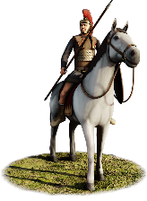
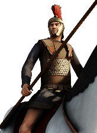
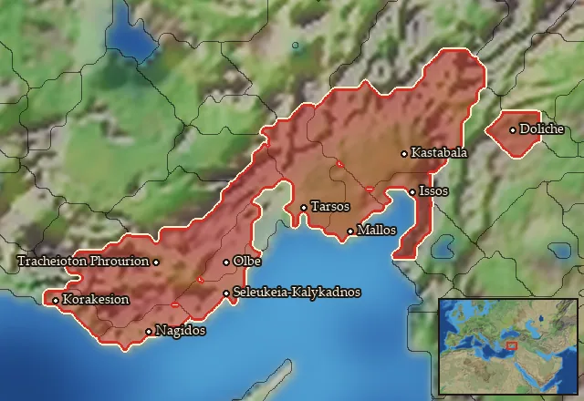

RTR: Imperium Surrectum
RTR: Imperium SurrectumCilician Cavalry


Class: light · Category: cavalry · Men per unit: 30
Description
Cilician Cavalry are dual-purpose cavalry equipped with round oxhide shields. Crested-attic, Chalcidian, and Phrygian helmets provide them with the necessary protection. While a few of these men wear the eastern version of the more up-to-date linothorax, others wear dissimilar Persian leather cuirasses. Their strength lies in harassing the enemy with javelins, but they can also charge their foes with long spears. Make use of their mobility and flank the enemy! Not all of these horsemen have armour, though, so do not count on them winning a prolonged melee or defending against concentrated missile fire.
Historical background
Cilicians are not known for their cavalry formations, but their rulers have shown the usefulness of having such a force over the centuries. Arsames, the Persian satrap of Cilicia during Alexanders’ invasion, was one of them. At the Battle of Granicus (334 BC), Arasmes commanded cavalry on the left wing and was pitted in a brutal fight against Alexanders’ companion cavalry (Diodorus XVII.19.4). His formation almost killed the Macedonian king. As one of the few surviving nobles, Arasmes retreated to Tarsos in Cilicia, tasked with winning time at the narrow passages through the Tauros Mountains. He did, however, not commit to this task, and opted to start a scorched-earth policy. The few (local) troops that remained at the passes felt betrayed and deserted their posts in front of the approaching Macedonian army (Curt. III.4.5). Alexander confessed to be very lucky in this case, as his army could easily have been ambushed with rocks when navigating the passage (Curt. III.4.5).
Arasmes and his cavalry tried to burn Tarsos to the ground before retreating, but Parmenion arrived with an advanced guard and stopped this plan (Curt. III.4.14-15). Arasmes would soon after perish in the Battle of the Issos. Hence, Cilicia fell under Macedonian control, and Balakros became its first Hellenistic satrap. The local coinage clearly depicts a continuation from the Persian administration. Probably, this was also true for its military. Alexander himself recruited a lot of Persians into his cavalry forces (Arr. An. VII.6.1). It is not unlikely that some Persian influences, such as armour, were retained. The impressive Persian armour you can see some of these men wearing, is based on the Çan Sarcophagus.
The eastern part of Cilicia is a plain that favours cavalry. It is, thus, not unlikely that some ad hoc cavalry forces were created when needed, or served as bodyguards for the governors and nobles who needed to navigate treacherous terrain. Herodotus mentions that the Cilicians used oxhide shields in the 5th century BC (Hdt. 7.91.1). The rest of their equipment is based on what can be found in the wider region. Wearing a motley mix of gear, reflects Cilicia’s being a cultural crossroads.
That Arasmes tried to burn Tarsos to the ground, is an example of the bad governance Cilicia suffered for centuries. While it had some autonomy in the early 5th century (Diod. XIV.20), after Alexander’s death it was divided between the Seleucid Empire and the Ptolemaic Kingdom (PECS T.1.tarsus). With the decline of the Diadochi states, central governance dwindled even further. Cilicia became a battleground during the Mithridatic Wars, and was once more devastated (Flor. Epit. I.41.6.1). The lack of proper governance, its geography, and the devastation of centuries of warfare eventually caused the famous Cilician piracy problem.
Stats
| Rank in roster | Rank in roster | Rank in roster | Rank in roster | ||||||||
|---|---|---|---|---|---|---|---|---|---|---|---|
| Men per unit | 30 | █········· 8% | Attack | 10 | ███······· 27% | Charge bonus | 22 | ████████·· 77% | Defence | 27 | ████······ 35% |
| · armour | 6 | ████······ 39% | · defence skill | 18 | ████······ 38% | · shield | 3 | ████······ 38% | Morale | 11 | ████······ 40% |
| Discipline | Normal | Training | Highly trained | Recruitment cost | 1,863 dn | ████······ 42% | Upkeep per turn | 750 dn | ███████··· 73% | ||
| Turns to recruit | 3 |
Weapons
| Primary | Secondary | Primary | Secondary | Primary | Secondary | Primary | Secondary | ||||
|---|---|---|---|---|---|---|---|---|---|---|---|
| Attack | 10 | 9 | Charge bonus | 22 | 29 | Type | thrown · archery | melee · blade | Damage | piercing | piercing |
| Projectile | javelin | — | Range | 60 | — | Ammunition | 7 | — | Properties | Thrown | — |
Defence
| Primary | Secondary | Primary | Secondary | Primary | Secondary | Primary | Secondary | ||||
|---|---|---|---|---|---|---|---|---|---|---|---|
| Total | 27 | — | Armour | 6 | — | Defence skill | 18 | — | Shield | 3 | — |
Condition and terrain
| Hit points | 1 | Mount | light horse | Ground: scrub / sand / forest / snow | 0 / 0 / -4 / 0 | Charge distance | 40 |
| Formations | Square |
Technical stats
| Time between blows (primary / secondary) | 2.5 s / 2.5 s | Extra fatigue in hot climates | 1 | Spacing between men: close / loose | 2 × 4.8 m / 3 × 7.2 m | Default ranks | 5 |
In battle: Very good stamina
Who can recruit it
A core roster unit for one faction, which can raise it anywhere it holds the right building:
Any faction holding one of the provinces below can field it.
Exactly what a settlement must have, route by route (5)
| Building | Also requires | Building | Also requires | Building | Also requires | Building | Also requires |
|---|---|---|---|---|---|---|---|
| Any settlement | Tier 2 Military Industrial Complex · Cilician area of recruitment · Any Government (Dependency, Indirect Rule or Direct Rule) · Tier 2 Colony not built · Requires horses resource, if not available locally you can build Fine Horse Exports to supply it | Indirect Rule | Tier 2 Military Industrial Complex · Tier 1 Colony · Requires horses resource, if not available locally you can build Fine Horse Exports to supply it | Direct Rule | Tier 2 Military Industrial Complex · Tier 1 Colony · Requires horses resource, if not available locally you can build Fine Horse Exports to supply it | Homeland | Tier 2 Military Industrial Complex |
| Any settlement | Tier 2 Military Industrial Complex · Cilician area of recruitment · Dependency or Indirect Rule · Tier 1 Colony not built |
Areas of recruitment

| Zone | Provinces | ||||||
|---|---|---|---|---|---|---|---|
| Cilician | 10 |